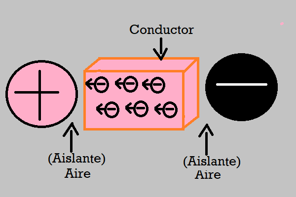
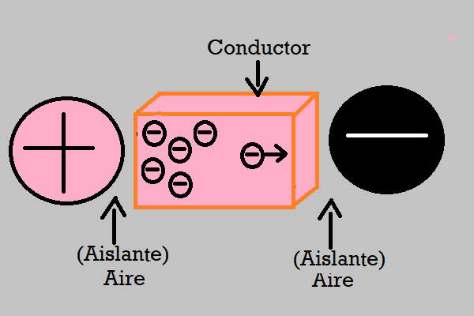
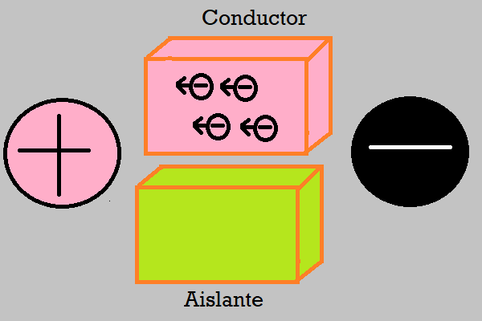
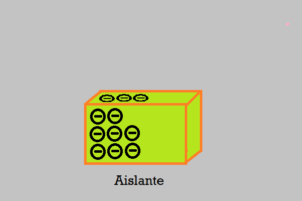
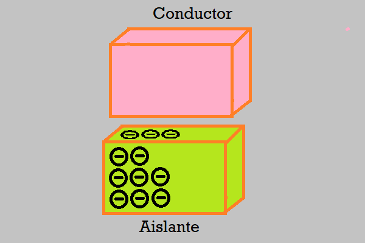
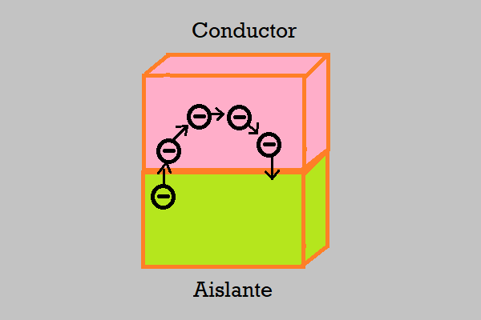
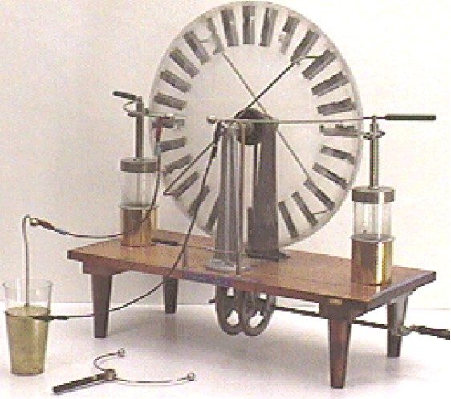
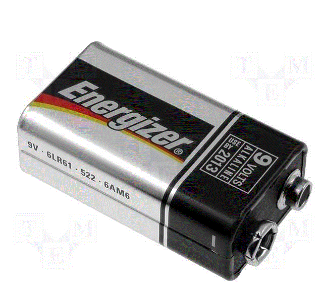

Las partículas cargadas negativamento (los electrones), son móviles.
Los materiales conductores permiten la migración de electrones entre átomos.
Si acercamos una gran carga positivo o negativa a un conductor, las cargas negativas móviles del conductor, se desplazarán obedeciendo a la ley de cargas.

Debido a que las cargas no pueden "saltar" del conductor y atravesar el aire (que es aislante), se acumularán en un sector del conductor. La gran cantidad de cargas acumuladas generarán una gran repulsión sobre las cargas mas resagadas, frenando el desplazamiento. A este fenómeno se lo llama "Inducción Electrostática".

En los materiales aislantes en cambio, no se produce el efecto de desplazamiento de cargas por inducción electrostática

En un material aislante puede haber también un desequilibrio de cargas provocado por la fricción del mismo material o con un material de otro tipo. El desequilibrio de cargas en el material aislante no se desplazará por el material, sino que quedarán ubicadas en donde se las inyectaron.

Si acercamos un conductor al ailador con desequilibrio de cargas, se producirá en primera instancia la "inducción" electrostática descripta más arriba.

Si el conductor se pone en contacto con el aislador con desequilibrio de cargas, se producirá un desplazamiento de estas.

Observen como se ha producido un desplazamiento de cargas, provocado por un desequilibrio de en un cuerpo ageno al conductor. En otras palabras podríamos decir que el aislante con desequilibrio de cargas ha "generado" un flujo de electrones en el conductor.
Corriente Eléctica
Desplazamiento de cargas eléctricas negativas provocado por un generador.
En el ejemplo visto, el generador de la corriente eléctrica es un cuerpo aislante con un desequilibrio de cargas. El problema de este tipo de generadores es que cuando se compensa el desequilibrio de la cargas se interrumpe la corriente.

Generadores de corriente electrostáticos.
Aunque los primeros generadores de corriente eran electrostáticos, fueron desplazados por pilas y baterías de pilas que suministran un flujo de corriente mas estable y preciso.

Generador comercial moderno.
Práctica
Identificar efectos electrostáticos que se producen en la vida cotidiana. Determinar cuál es el aislador con desequilibrio de cargas, cuál es el conductor y el camino que recorre la "Corriente Eléctrica".
Evaluación
Aunque la evaluación es contínua, este tema tendrá una instancia de evaluación escrita.
Cuestionario de la Evaluación
¿Qué ley gobierna el movimiento de cargas en un conductor?
¿A qué llamamos "inducción electrostática"?
¿Por qué la inducción electrostática tiene efectos distintos en conductores y en aislantes?